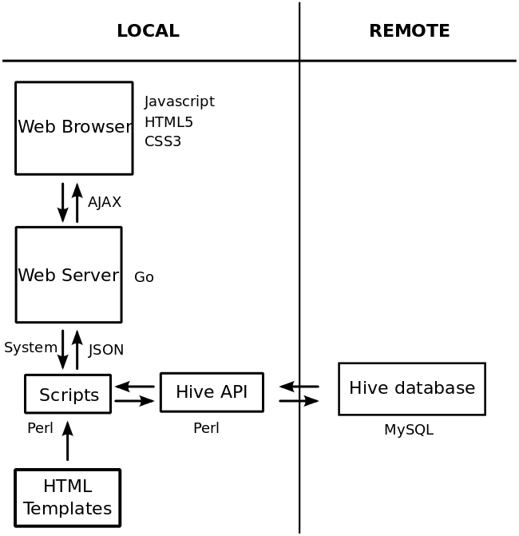
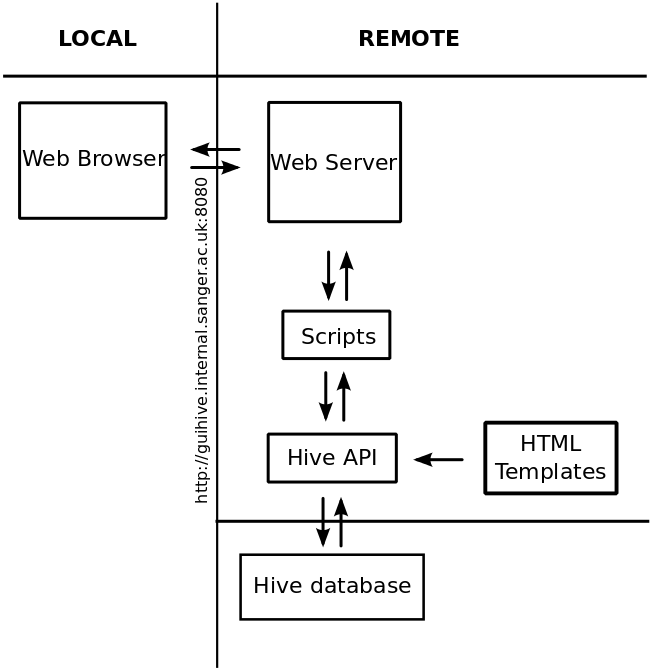

guiHive goals
- Monitor your pipeline
- Change parameters easily
- Visualize basic statistics of your pipeline
- Make more complex tasks easier
Where we are
- "Mostly working"
- Not adding new features
-
- Still important bugs to fix. Still no documentation. Use with caution!
- Needs better layout and styling
Browser compatibility...
- Chrome, Safari, Opera <= Use any of these!
- Firefox: Has problems with SVGs. Works but it may be painfully slow!
- Internet Explorer: Should work on IE >= 9 (But I haven't tested it).
How guiHive works

Repository
- git clone user@git.internal.ac.uk:/repos/git/ensembl/compara/guihive.git
- git clone gitinternal:/repos/git/ensembl/compara/guihive.git
The guiHive Sanger VM

http://guihive.internal.sanger.ac.uk:8080/static/